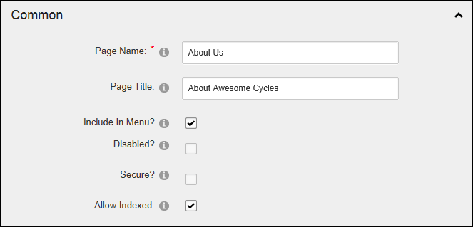
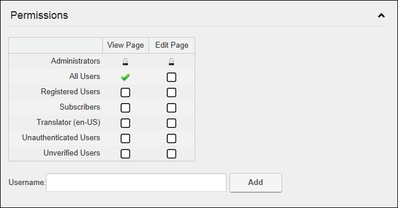
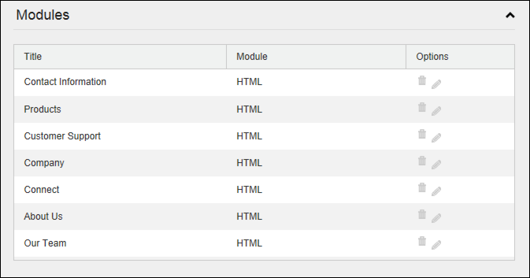
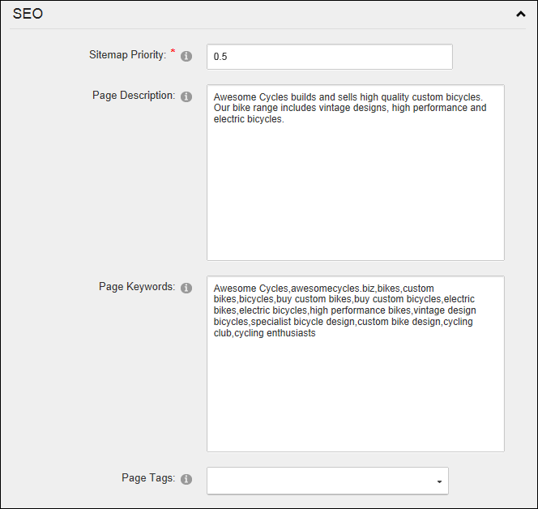
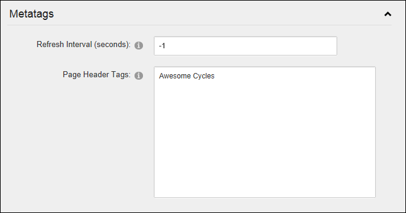
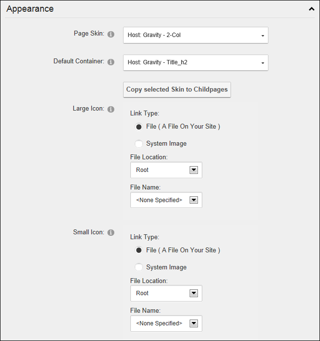
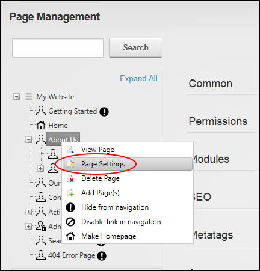

Editing Page Settings
How to view and or edit a selection of page settings for any page using the Pages module. DNN Platform users must be granted Edit Page permissions to the page where the Pages module is located and the page that is being edited. Evoq Content users must be granted Add Content permissions to the page where the Pages module is located and Manage Settings permissions to the page that is being edited.
Option One
- Navigate to Admin >
 Page Management - OR - Go to a Pages modules.
Page Management - OR - Go to a Pages modules.
- In the left-hand navigation tree, click on a required page name. This displays the settings for this page to the right.
- Go to the Common section and enter/edit any of the following settings:
- In the Page Name text box, enter a name for the page. If this page is displayed in the menu, this will be the name in the menu.
- In the Page Title text box, enter a short, descriptive sentence summarizing the page content. The title is used by search engines to identify the information contained on the page. It is recommended that the title contains at least 5 highly descriptive words and does not exceed 200 characters.
- At Include In Menu?, to include this page in the menu- OR - to hide the page.
- At Disabled, select from these options:
- Mark
 the check box if the page name is not a link. I.e. When you click on the page name in the menu nothing happens. This option is typically selected for a parent page to provide a way for users to navigate to its child pages.
the check box if the page name is not a link. I.e. When you click on the page name in the menu nothing happens. This option is typically selected for a parent page to provide a way for users to navigate to its child pages. - Unmark
 the check box for this page name to be a link to the page. This is the default option.
the check box for this page name to be a link to the page. This is the default option.
- Optional. At Secure? to force this page to use a secure connection or secure socket layer (SSL). This option requires the Administrator to configure the SSL Settings on the Admin > Site Settings page.
- Optional. At Allow Indexed, to allow this page to be indexed by the search spider. See "About the Search Engine SiteMap Module"

- Expand the Permissions section to update permissions. Note: This section is only visible to Administrators and SuperUsers. See "Setting Page Permissions"

- Expand the Modules section to view a list of all modules on this page.
- Click the Delete
 button to delete the related module.
button to delete the related module. - Click the Edit
 button to go to the Module Settings page for the related module.
button to go to the Module Settings page for the related module.

- Expand the SEO section and enter/edit any of the following settings:
- In the Sitemap Priority text box, enter a number between 0.1- 1.0 that is used to determine the SEO SiteMap priority.
- In the Page Description text box, enter a description of the page content. The description is used by search engines to identify the information contained on the page. It is recommended that the description contains at least 5 words and does not exceed 1000 characters.
- In the Page Keywords text box, enter key words for this page separated by comma.
- In the Page Tags text box, select one or more tags associated with this page. Page tagging is a way of categorizing content for more meaningful search results.

- Expand the Metatags section and enter/edit any of the following settings:
- In the Refresh Internal (seconds) text box, enter the interval to wait between automatic page refreshes. (E.g. Enter "60" for 1 minute or 60 seconds.) Leave field blank to disable.
- In the Page Header Tags text box, enter any tags that should be rendered in the "HEAD" tag of the HTML for this page.

- Expand the Appearance section and edit/set any of these optional settings:
- At Page Skin, select a skin from the drop down list or select [Default Skin] to use the default skin set for the site. See "Setting the Default Site Skin and Container"
- At Default Container, select a container from the drop down list or select [Default Container] to use the default container set for the site.
- At Large Icon, select an image to be used as the Large Icon for any Console module relating to this page. Select the location of the required icon from these options:
- File (A File On Your Site ), select to insert any image from the site's Digital Asset Management module, or upload a new file.
- Set the link to an existing file (See "Setting a File Link") or a new file (See "Uploading and Linking to a File"). Note: You can remove the icon from this and the following field by selecting < None Specified > as the File Name when setting a file link.
- System Image: Select to choose an icon which is part of your DNN application. This displays a list of available images.
- Select the required image.
- At Small Icon, using the same steps as for the above field, select the image to be displayed beside the page name in the menu. This image is also used as the Small Icon for any Console module relating to this page.

- Expand the Link section and edit/set any of these optional settings:
- At Link URL, to set this page to be a navigation link to another resource (rather than displaying the page itself), select or add the link here. See "About the Link Control"
- At Permanently Redirect?, to notify the web browser that this page should be considered as permanently moved. This enables Search Engines to modify their URLs to directly link to the resource. Note: This setting is ignored if the Link Type is set to None.

- Click the Update Page button.
Option Two
- Navigate to Admin > Page Management - OR - Go to a Pages modules.
- In the left-hand navigation tree, right-click on the required page and then select Page Settings from the drop down list. This will open the settings page for this page in a new window.

- Update page settings as required. See "Page Details Settings for Existing Pages", "Advanced Settings for Existing Pages", or "Setting Page Permissions"
- Click the Update Page button.